Abstract Play Dameo Tournament #4
White: kirin
Black: oleg_topol
0. Start
1. F2-G3
2. D6-D5
3. E3-D4
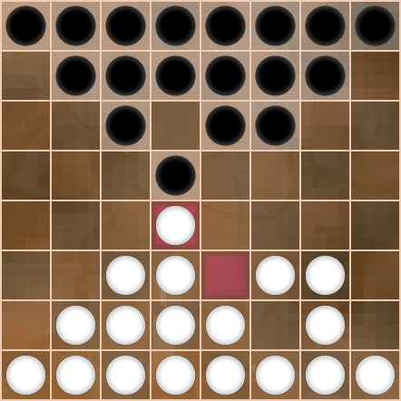4. C6-C5
5. D4xD6
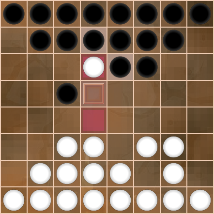6. D7xD5
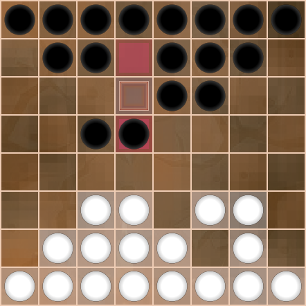7. B1-B3
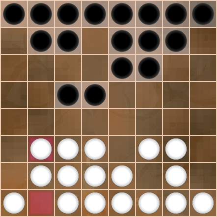8. B7-A6
9. D1-A4
10. B8-A7
11. B2-A3
12. C7-B6
13. E2-C4
14. G8-G6
15. C4xC6
16. B6xD6
17. A3-A5
18. E8-H5
19. E1-B4
20. E7-E5
White aims to weaken black's center and strengthen the left with a side jump. But black gives up a king trap to restore the strong central 4-square. Moving this long diagonal line is efficient and gives black a speed advantage. Dameo affords some control over pacing, and here we see black's initiative subtly taking control of the game.
21. D3-E4
22. E5xE3
23. F3xD3
24. H8-E5
25. G2-H3
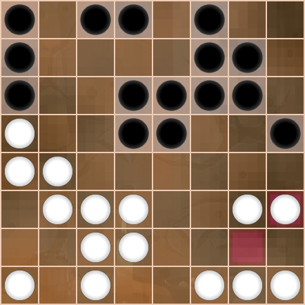26. F8-E7
27. G1-H2
28. G7-H6
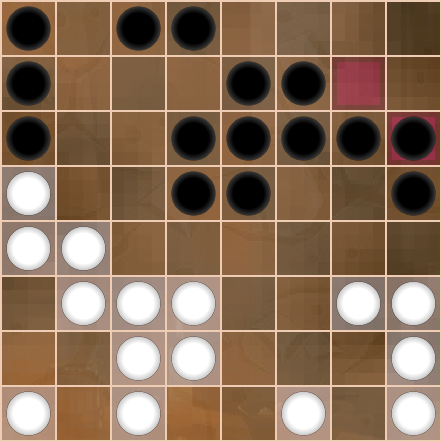White unwittingly plays into black's plan, losing time with sacrifices, and weakening the left side simply by advancing it while black's center is stronger.
29. C2-E4
30. E5xE3
31. D3xF3
32. F6-E5
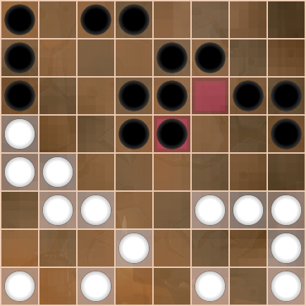33. C3-C4
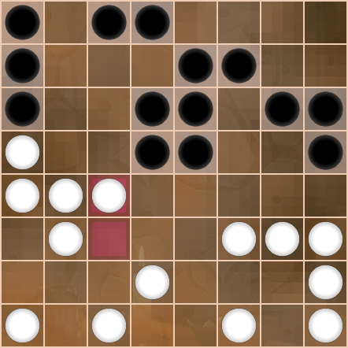Black seizes the strategic opportunity and uses the strong center to negate white's presence on the left.
34. E7-C5
35. C4xC6
36. D6xB6
37. D2-C3
38. A6-B5
39. A5xC5
40. D5xB5
41. C3-A5
42. F7-D5
43. A5xC5
44. D5xB5
White gives up the left side king trap and prepares to support the A4 checker when black moves to advance his majority forces on this side. King traps are not to be discarded lightly, but a simple corner king trap is generally less helpful when attacked head on, and it's better to prevent such a direct attack in the first place.
45. C1-B2
46. C8-D7
47. A1-C3
48. D8-D6
49. F1-G2
50. D7-C6
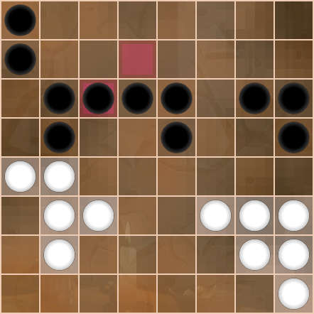51. H1-E4
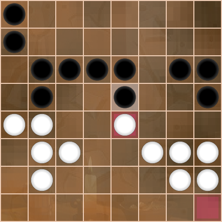52. E5xE3
53. F3xD3
Black launches a dangerously fast side attack, aiming to penetrate through the A file before white can shore up the weak left flank.
54. B6-A5
Taking on A first leads immediately to disaster...
55. A4xA6
56. A7xA5
57. B4xB6
58. C6xA6
With an empty back line and no reinforcements from the corner, white can't stop the onslaught and black's pair marches to victory.
59. B2-A3
60. A6-A4
61. C3-B4
62. A4xA2
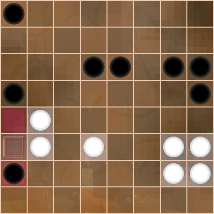61. A3-B4
62. A4xC4xC2
Taking on B first, black can still dash down the A file.
55. B4xB6
56. A5xA3
But doing so leaves white with a tempo, as black's next move will be to capture the hopeless checker on B6.
The position is charged with hidden potential, and kirin missed it in the game. oleg_topol pointed out a winning combination for white after the moment had passed. Let's take a look at this brilliant line that begins with a "stretching sacrifice".
57. D3-E4
58. C6xA6
59. E4-E5
The D4 checker runs to meet E6! This only works because the forced capture prevents black from lining up the central checkers to counterattack. A brief pause, a moment's hesitation, can change the game completely. White's 4-square converts the potential energy of the position, launching through black's defense to king first!
60. E6xE4
61. H2-F4
62. E4xG4
63. G3xG5xG7
Black can't safely proceed to attack, as doing so would break the pair and lead to disaster.
64. H6-H4
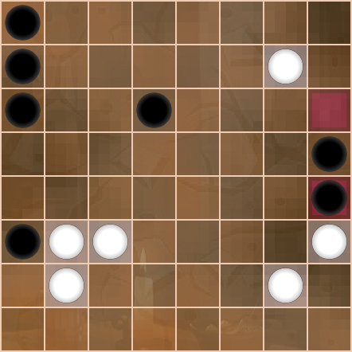65. G7-H8
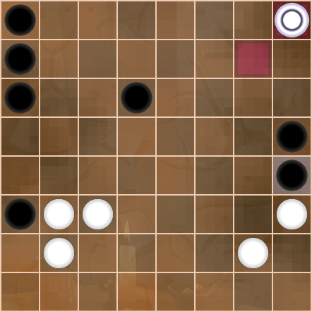66. H4xH2xF2
67. H8xH2xD2xD8
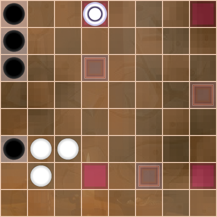White can delay black's advance to the back line. The remaining side pawns can pry black's forces apart, allowing the white king to clean up.
64. A3-A2
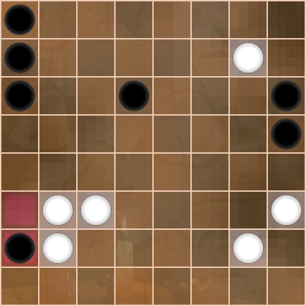65. G7-H8
66. A2xC2xC4
67. H3-H4
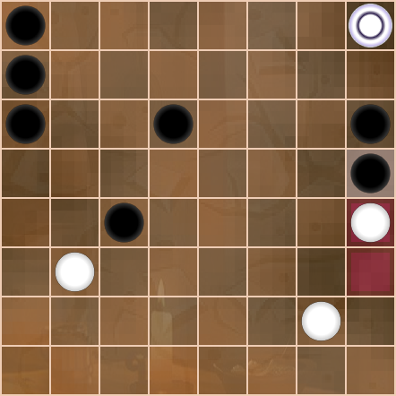68. H5xH3
69. H8xH4xH1
Guile and blundering aside, the strong edge line may be black's best remaining hope. Here's a close endgame for example.
64. A8-A5
65. G7-H8
66. A7-A4
67. H3-H4
68. H5xH3
69. H8xH4xH1

70. A6-A2
71. H1-H6
72. A2xC2xC4
73. H6xC6xC1
74. A3xC3
75. C1xC4
76. A5-A3
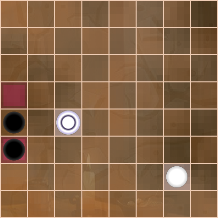77. C4-C1
78. A4-A2
79. C1-A1
80. A3-B2
Since two against one is decisive in Dameo, white wins in this unrealized potential ending.
81. A1xA8
82. B2-A1
83. G2-H3
In the real game, white missed the combination and settled for a simple advance, hoping perhaps that black would attack a 2-chain and allow white to cross the 5 rank.
57. G2-G4
58. C6xA6
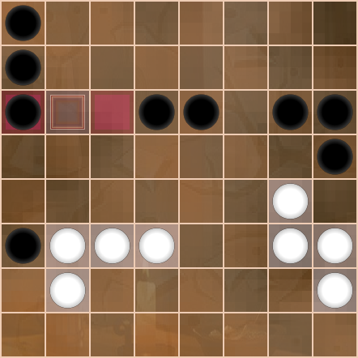59. H2-H4
60. A3-A2
61. G3-G5

62. A2xC2xC4
63. G5xG7
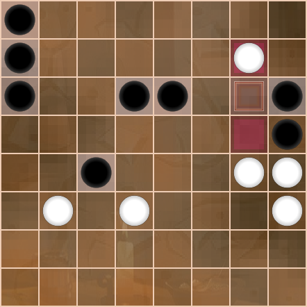60. D6-E5
61. G3-G5
62. H5xF5
63. G4-H5
64. H6-G5
In actual play, white attacked a 2-chain, allowing black to advance and king first.
65. H5-H6
66. E5-D4
67. H6xF6xD6
68. D4xD2
69. D6-D7
One of oleg_topol's great strengths is patience. It may be tempting to king immediately, but in the present board situation, kinging without preparation is either bad...
70. D2-C1
71. D7-C8
72. C1xC4
73. C8xC1
... or balanced.
70. D2-D1
71. D7-D8
Black prepares to dominate the board with a king by separating white's remaining forces. Threatening a roundhouse multi-capture makes D7-C8 an impractical defense.
70. F5-G4
71. H4xF4
72. D2-C1
73. D7-C8
74. C1xC4xH4xH2xA2
75. C8-H3
76. A3xC3
77. H3xA3xA1
78. A6-A5
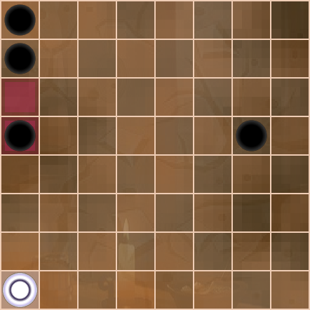79. A1xA6
80. A7xA5
73. B3-C4
74. C1-H1
75. H3-G4
76. G5xG3
77. D7-D8
78. G3-F2
79. F4-E5
80. F2-F1
81. C3-C5
White's one king is no match for black's two, and the remaining pawns have little hope to reach the end. A few defensive moves waiting for a blunder, and it's over.
82. H1-H8
83. D8-D5
84. F1-B1
85. B2-C3
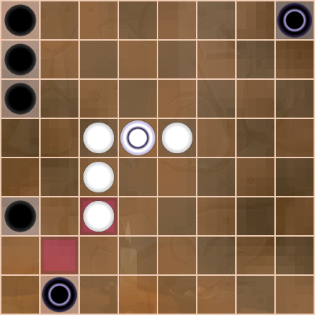86. B1-B6
87. D5-D1
88. A3-A2
oleg_topol wins. 0:2
89. Resign